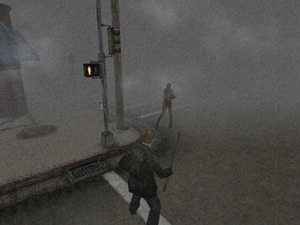
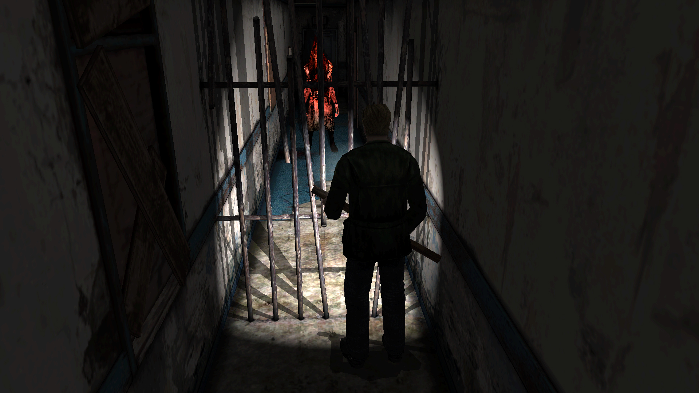

There are many horror games out there, but great horror games are a rare find. If you start making a list of those great horror games, Silent Hill 2 might be at the top. For me it might be the first game that I think of. Silent Hill 2 is the second game in the Silent Hill series, released on September 24, 2001. The main protagonist is James Sunderland who is asked to meet his beloved wife, Mary, in a place know as Silent Hill. The interesting thing is that James’ wife passed away three years ago and yet James somehow got a letter from one Mary Shepard-Sunderland. James confused by the letter wants to find the truth that lies in Silent Hill.

The game starts just outside of Silent Hill itself. As the player progresses through the game they go deeper into Silent Hill even going into alternate worlds. The setting itself gives off a creepy vibe, the game is dark and dim giving it the horror type feeling. It also has it’s well know fog that occurred in the first game as well making the character cautious when traveling through the streets of Silent Hill. The player will encounter various locations in Silent Hill. Those locations include: a hospital, apartments, a hotel, and even an alternate world. Each location will have a different feeling to it but yet it will still give off that dark/dim setting that is felt throughout the entire game.
The player can choose from two sets of difficulties. One set known as the “Action Level”, which is the combat side of the game. The player can choose between beginner, easy, normal, and hard. The other set of difficulties is known as the “Riddle Level”. During the game the player will come across puzzles or riddles that they have to solve to progress through the game. The player can choose between beginner, easy, normal, and hard. So if a player is good in the combat or action level of the game they can choose a harder difficulty while choosing an easier difficulty for the riddle side of the game and vice versa.
The gameplay is very smooth and simple for the player to get a grasp on. Throughout the game the player will face enemies or monsters that will try to prevent them from progressing throughout the game. There are various types of monsters that the player will encounter so they won’t get bored of encountering the same monster over and over. The player will also have to solve puzzles or riddles for them to progress throughout the game. The game does a good job of giving hints to the player to help them solve these puzzles. At the same time the game does a good job on giving the player very little hints on what to do next. This challenges the player and makes them feel alone, which adds to the horror style of gameplay. The player will also face the well-known monster in Silent Hill series known as Pyramid Head. Along with monsters the player will also encounter other characters that will help build to the story and help James find the truth.

Smooth gameplay along with a great storyline will keep the player progressing through the game. The game setting and monsters gives the game a very unique feeling and one that players can only relate to Silent Hill. It truly is a unique and one of the best horror games that so few games after its release have topped.